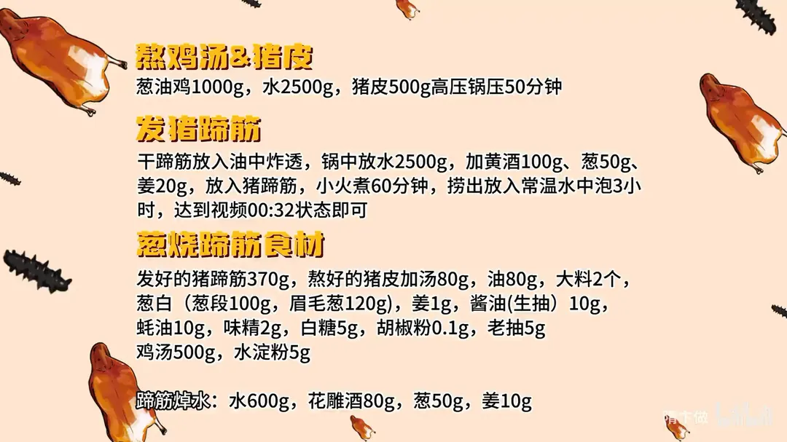
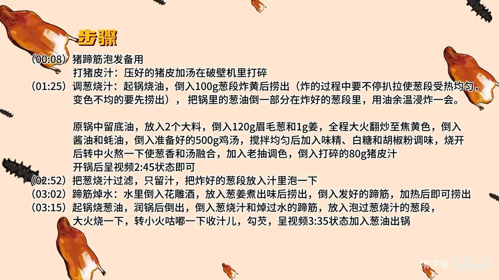

葱烧蹄筋
隋卞一做。干蹄筋油炸后加黄酒、葱姜小火煮 60 分钟，再泡水 3 小时发透；100g 葱段炸香取油、120g 眉毛葱熬汁，兑 500g 鸡汤和 80g 猪皮汁，蹄筋焯水后同烧收汁。
原视频：https://www.bilibili.com/video/BV1Vf421q7Sb
食材
猪蹄筋、葱段 等 19 样
| 类别 | 用料 | 用量 |
|---|---|---|
| 主料 | 发好的猪蹄筋 | 370g |
| 主料 | 熬好的猪皮加汤 | 80g |
| 调料 | 油 | 80g |
| 调料 | 大料 | 2 个 |
| 葱白 | 葱段 | 100g |
| 葱白 | 眉毛葱 | 120g |
| 调料 | 姜 | 1g |
| 调料 | 酱油（生抽） | 10g |
| 调料 | 蚝油 | 10g |
| 调料 | 味精 | 2g |
| 调料 | 白糖 | 5g |
| 调料 | 胡椒粉 | 0.1g |
| 调料 | 老抽 | 5g |
| 调料 | 鸡汤 | 500g |
| 调料 | 水淀粉 | 5g |
| 蹄筋焯水 | 水 | 600g |
| 蹄筋焯水 | 花雕酒 | 80g |
| 蹄筋焯水 | 葱 | 50g |
| 蹄筋焯水 | 姜 | 10g |
步骤
- 发蹄筋：干蹄筋放入油中炸透；锅中放 2500g 水，加 100g 黄酒、50g 葱、20g 姜，放入猪蹄筋，小火煮 60 分钟，捞出放入常温水中泡 3 小时，发到软透饱满即可。
- 熬汤打猪皮汁：葱油鸡 1000g 加水 2500g、猪皮 500g，高压锅压 50 分钟；压好的猪皮加 80g 汤，在破壁机里打碎。
- 炸葱段：起锅烧 80g 油，倒入 100g 葱段炸黄后捞出，炸的过程中不停扒拉使葱段受热均匀，变色不均的要先捞出；把锅里的葱油倒一部分在炸好的葱段里，用油余温浸炸一会。
- 调葱烧汁：原锅留底油，放入 2 个大料，倒入 120g 眉毛葱和 1g 姜，全程大火翻炒至焦黄色；倒入 10g 酱油和 10g 蚝油，倒入 500g 鸡汤，搅拌均匀后加 2g 味精、5g 白糖、0.1g 胡椒粉调味；烧开后转中火熬一下，使葱香和汤融合，加 5g 老抽调色，倒入打碎的 80g 猪皮汁，开锅后汤汁黏稠即可。
- 过滤：把葱烧汁过滤，只留汁，把炸好的葱段放入汁里泡一下。
- 蹄筋焯水：600g 水里倒入 80g 花雕酒，放入 50g 葱、10g 姜煮出味后捞出，倒入 370g 发好的蹄筋，加热后即可捞出。
- 烧制出锅：起锅烧葱油，润锅后倒出，倒入葱烧汁和焯过水的蹄筋，放入泡过葱烧汁的葱段，大火烧一下，转小火咕嘟一下收汁儿，勾 5g 水淀粉芡，淋葱油出锅。
小贴士
- 干蹄筋必须先炸透再煮，才能发得饱满，泡水 3 小时不能省。
- 炸葱段时勤扒拉，颜色先变的先捞出，避免炸糊发苦。
- 葱烧汁过滤后再泡葱段，成菜清亮不浑浊。
讲解要点
难度：★★★★☆（难点是发蹄筋和熬葱烧汁，工序多、浓度靠眼力判断）
为什么这么做
- 干蹄筋先油炸、再煮、再泡 3 小时：油炸让胶原结构膨起，后续才吸得住水；最后泡够时间，水分从外到里吸匀，咬着才有弹性而不是外层软、里面硬。
- 高汤用猪脚、鸡脚，另加猪皮汁：这些部位胶原蛋白多，汤才黏稠、挂口，味道才厚重；胶原靠炖很难全溶出，猪皮加汤直接打碎入汁是最省工省料的增稠办法。
- 只用葱白、不留葱绿：葱绿里的黏液和叶绿素久炸久熬会发苦发绿，葱白炸出来才是甜香。
- 葱段炸黄后再用热油浸炸、颜色先变的先捞：余温继续逼香，先捞是为了不让某一颗炸糊把整锅汁带苦。
- 眉毛葱大火煸到焦黄再下酱油蚝油：焦黄是葱香最足的状态，酱油蚝油在高温里一炝，酱香才出得来。
- 汁熬到能拉成「一条线」再过滤：浓度够了才裹得住蹄筋；滤掉葱渣，成菜才清亮不发浑。
- 蹄筋用花雕酒、葱姜焯水，收汁补薄芡淋葱油：焯水去腥去油、同时把蹄筋回热好吸汁；薄芡把汁挂在蹄筋上，葱油提香亮色。
容易翻车
- 蹄筋没发透就下锅烧，咬着硬，也吸不进味。
- 葱段炸过了头，整锅汁带苦味。
- 葱绿混进汁里，汁发绿、发涩。
- 猪皮汁一次倒太多，汁稠成糊，糊嘴。
- 焯完水的蹄筋没控干就下锅，汁被冲淡，挂不住。
原片尾卡


原片文案
AI 字幕校准稿
正儿八经——我不是从那种特别大的城市来的，可能我想吃到这种等级的菜，我们那里都没有卖，我觉得大家一定要在家里面试。我知道我的观众里边呢有不少是餐饮同行，最近呢一直教家庭版的菜，忽略了你们的感受，来吧，可以商用版的葱烧蹄筋。
我们买的是干的猪蹄筋，发制的教程给你们放到片尾，自己在家做买鲜的也可以。这个呢就是我们发好的，大概你看是这种状态，它是有弹性的，你一咬跟咱们买的那种鲜的蹄筋口感是一样的。咱们开始做。葱烧，鸡汁的一定是要用高汤的，高汤里面加的原料，比如你像猪脚啊、鸡脚等等，主要为了什么？是增加汤的粘稠度，这样你吃的味道才会非常的厚重。看我们能不能用 30% 的工作量和成本达到八九十的效果——是能的。
接下来这个步骤呢，是全网没有人教过你们的。煮好的猪皮加点汤，直接放到破壁机里边。我们平时炖高汤的时候，这个胶原蛋白很不容易把它炖出来，所以说厨师在吊高汤的时候，胶原蛋白的量加的是很大的。我们直接给他打碎，这就是最直接最暴力的方法了。
我们下一步调一个葱烧汁。起锅烧油，然后把葱段搁进去炸一下。炸葱的时候呢，扒拉扒拉它，让它受热均匀变色，不均匀的先给它捞出来，一定要炸到这种黄色。然后把这个热油倒在这个葱里边，用这油的余温再把这个葱浸炸一会。
然后锅里边的底油放两个大料瓣，把葱倒进去，然后放一片姜，全程大火，勺子不停地在锅里边搅拌，让葱均匀地受热、均匀变色。咱的这些葱都是葱白，没有葱绿，纯葱白——里面绿的是葱芯，那个葱绿里边有葱黏液，做完以后它有点苦。
里边倒上酱油、蚝油，我们准备好了汤，里边调味味精、白糖、胡椒粉。烧开之后转中火熬一下，要让葱香滚到汤里面去，加点老抽调的颜色。加入咱们打碎的猪皮汁，你们看加进去立马就粘稠了。开锅的时候你把它撩起来，你看他这个汁是一条线，这个浓度就可以了，然后定一下味。好了，我把它过滤了，只要汁。咱们把这个炸过的葱放到这个汤里边去泡一下。
来，水里边倒点花雕酒，加点葱姜，煮出味之后把这个葱姜捞出去，发好的蹄筋倒进去，热了就能捞。
锅洗干净，来点油润，下锅控油，把葱烧汁放进去，焯过水的蹄筋倒进去，炸过的大葱也放进去，让它烧一下，稍微入一下味。转小火让它稍微咕嘟一下，你看现在这汤汁就已经很粘稠了，稍微补一点芡，勾到这种程度，然后来点葱油，出锅了。
我自己带的饭就过来了。这个葱香味啊，把我整个嘴都给糊住了，那个葱在我嘴巴里面打了我一拳。
这几年也吃了不少好东西了，能达到这么粘稠、葱香味这么足的，必须得是在那种愿意在菜上下功夫的那种店才能做出来，同样等级的，而且无一例外都卖得非常贵。我觉得咱这个一点都不比他们次。我从吃第一口到现在，我嘴巴里面现在还都是黏的，还都是那种葱香，非常非常之浓郁。奇香软糯，完全被那个葱香味萦绕着。粘稠浓郁的葱烧香，给它拌在米饭上面，超级无敌的香，太香了。
就这么简单，我觉得有他们八九十的效果。那你以为呢，没两把刷子敢在互联网混的？正儿八经，我不是从那种特别大的城市来的，可能我想吃到这种等级的菜，我们那里都没有卖。大家在家里面能用这么简单的方法就给它做出来，我觉得大家一定要在家里面试。